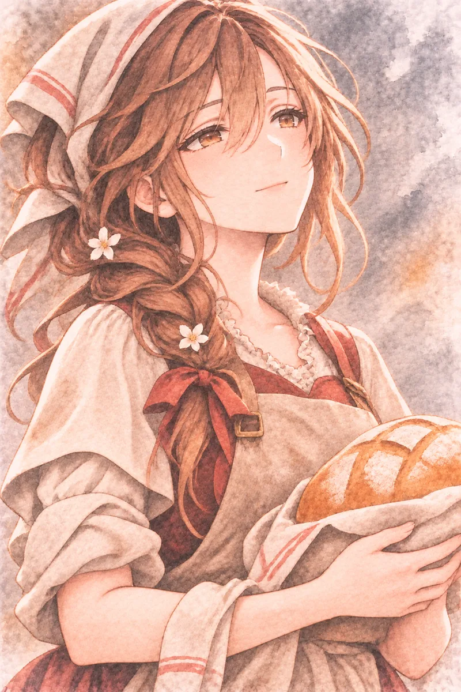
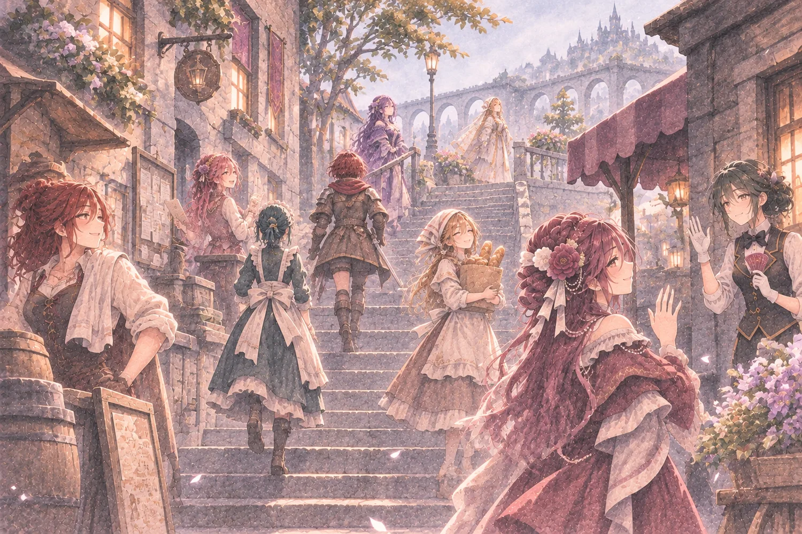
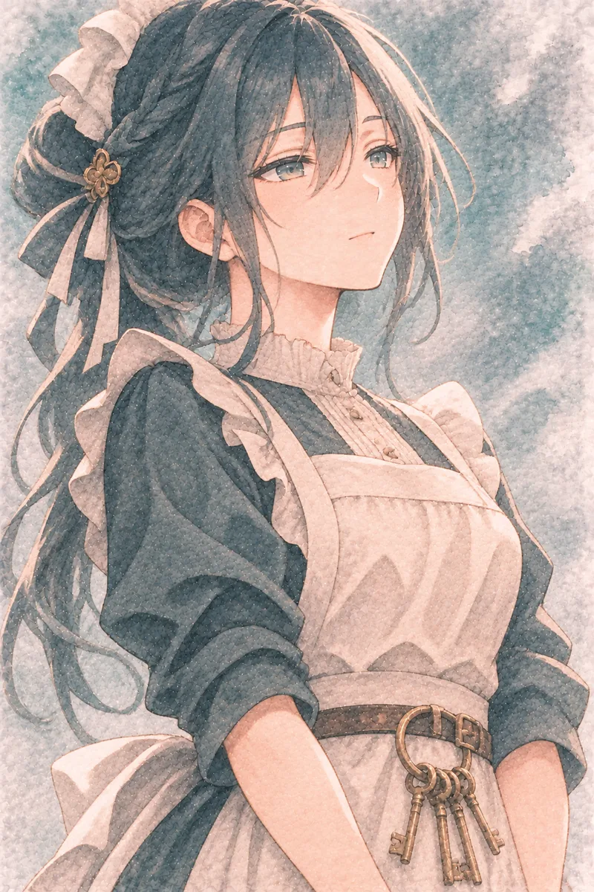
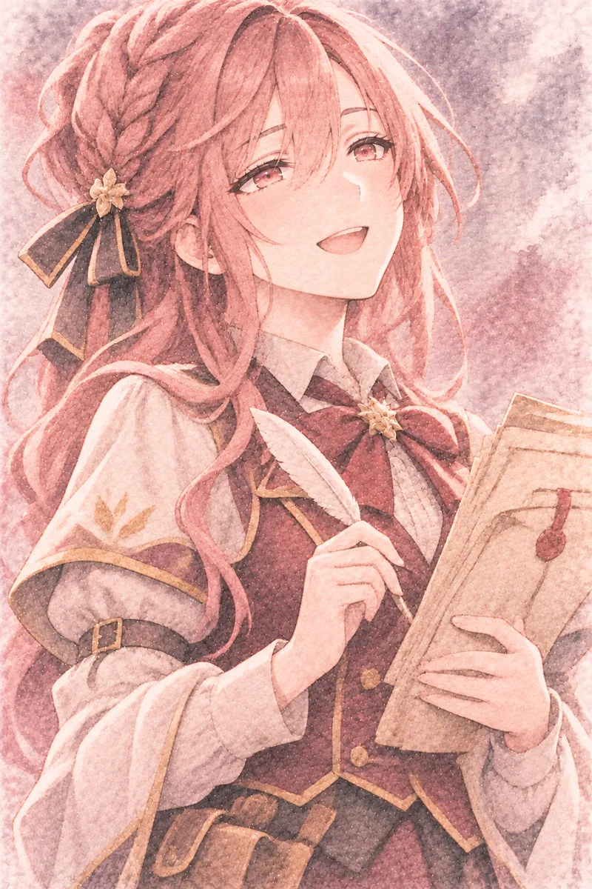
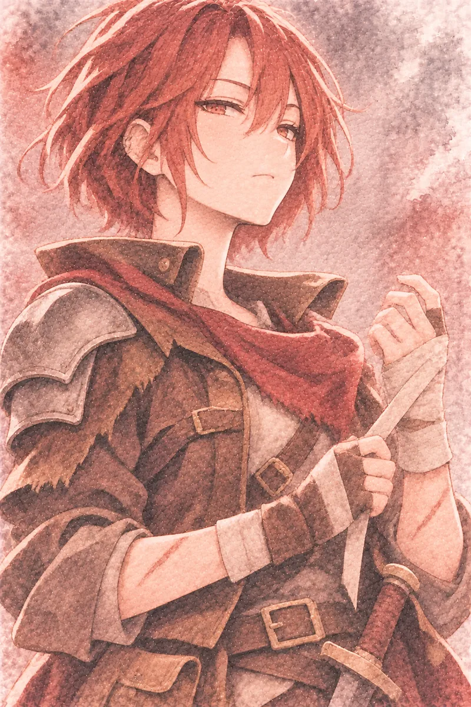
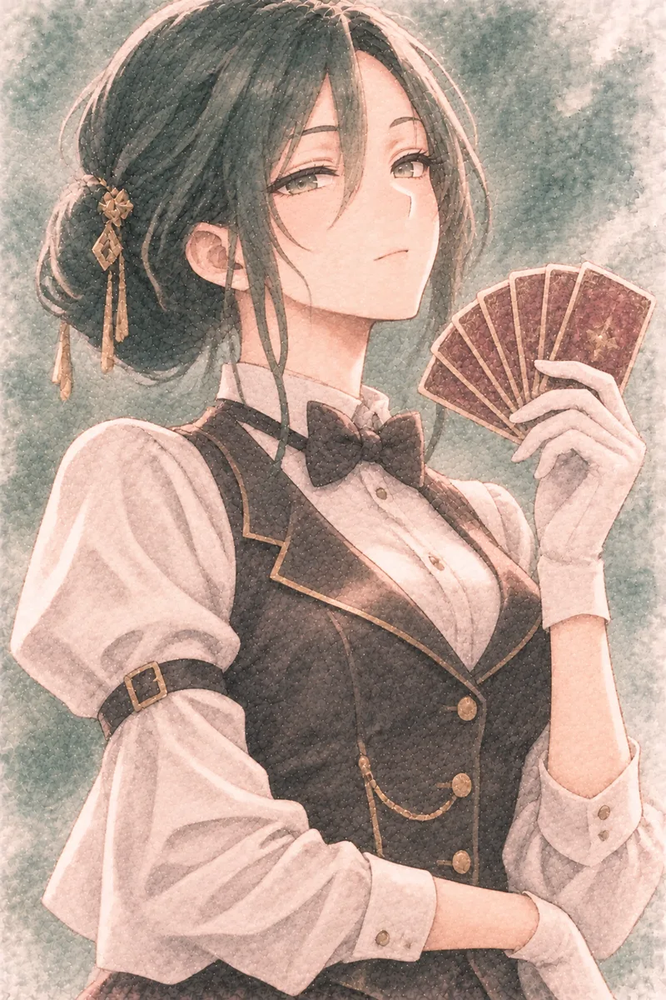
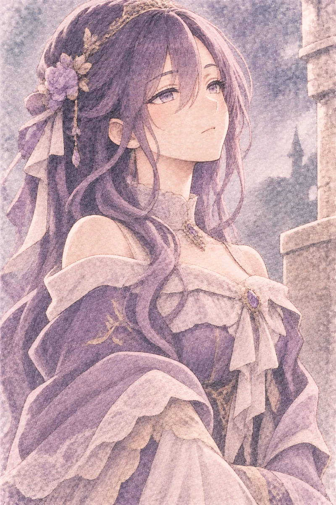
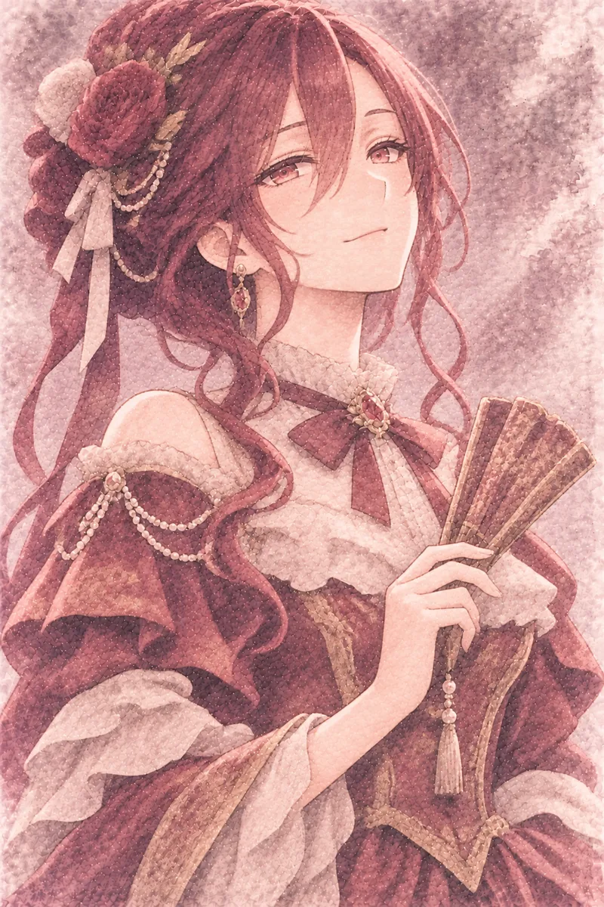
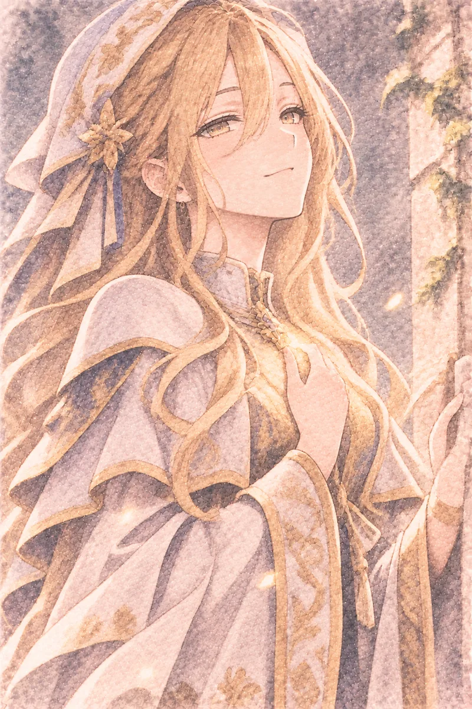

メリア
パン屋の一人娘
毎朝同じパンを同じ笑顔で売る日々に、明日を諦めてしまった。景色を見に行くという、ささやかな寄り道から物語が始まる。

灰色の毎日に、小さな色をひとつずつ。
『灰の国で、恋を知る』は、選択肢を選びながら読み進める、インタラクティブノベルです。舞台は、娯楽が少なく、誰もが疲れ切っている殺伐とした「灰の国」。そこへ転生してきた主人公が、街で出会う9人の女性の日常に、少しだけ寄り添っていきます。
パンを焼く手を止められないパン屋の娘、誰の顔も見なくなった宿屋の娘、笑顔の仮面をつけたギルドの受付嬢。彼女たちはみな、疲れや諦めを抱えています。主人公は救世主ではありません。景色を見に行く、一緒にスープを飲む、「おかえり」と言う。そんな"当たり前"のことを、ひとつずつ重ねるだけです。
恋愛の物語ではありますが、いちばんの主題は、「灰色だった毎日に、色が戻る瞬間」です。派手な事件は起こりません。そのぶん、ひとりひとりの小さな変化を、ゆっくり読んでもらえるように作りました。
最初は6人から遊べます。読み進めて幸福度をためる、または前の段階の人物をひとつずつ読み終えると、第七王女、侯爵家の令嬢、そして聖女が、順に現れます。

パン屋の一人娘
毎朝同じパンを同じ笑顔で売る日々に、明日を諦めてしまった。景色を見に行くという、ささやかな寄り道から物語が始まる。

宿屋の娘
数えきれない「さようなら」の中で、客の顔を覚えるのをやめた帳場の看板娘。名前を呼ばれることの意味を思い出していく。

冒険者ギルドの受付嬢
ギルドの太陽と呼ばれる、眩しい笑顔の受付嬢。けれど、その目だけが笑っていない。「おかえり」を待つ側の重さを抱えている。

冒険者
誰も受けたがらない討伐を、迷いなく引き受ける。「失っても困る命じゃない」と言う彼女に、生きる理由は見つかるのか。

酒場の女将
誰よりも逞しく、口が悪い姐御肌。毎晩誰かの弱さを受け止めながら、自分の弱さだけは誰にも見せない。

国の裏通りで働く女性
感情を表に出さず、「あるのは確率だけ」と言い切る人。幸福という言葉を幻想だと思ってきた彼女の、確率の外側を探す。

第七王女
継承順位は遠く、いずれ同盟のために嫁ぐと決まっている王女。「私が何を望むか、誰も聞いたことがない」と静かに笑う。

侯爵家の長女
誇り高く、隙のない微笑みの令嬢。家の再建のために、自分の気持ちは二の次にされてきた。

聖女
祈りで力を使うたび、自分の命が削られていく聖女。個人の望みを許されない彼女と、祈りの重さを分け合えるのか。
人物との関係は、幸福度に応じて5段階の「絆ランク」で表されます。ランクが上がるたびに、画面の背景色も少しずつ変わっていきます。
| ランク | 目安 |
|---|---|
| 警戒 | 最初の状態 |
| 顔見知り | 50ポイント以上 |
| 友達 | 100ポイント以上 |
| 親友 | 180ポイント以上 |
| 唯一無二の相棒 | 250ポイント以上。特別な結末が見られる |
・この作品は、フィクションです。登場する国、人物、団体は、すべて架空のものです。
・作中のイラストは、画像生成AIを使って制作し、作者が選定・調整しています。BGMは、AI音楽生成サービス「Suno AI」で制作しています。
・物語には、お酒が出てくる場面や、殺伐とした世相を示す描写が少しあります。刺激的な表現は含みません。
・保存データは、お使いのブラウザの中にだけ保存されます。ブラウザの閲覧データを消去したり、別の端末で開いたりすると、記録は引き継がれません。
はい、すべて無料です。登録やログインも要りません。
はい、スマホでの操作を中心に作っています。タップだけで進められます。パソコンのブラウザでも遊べます。
どの人物からでも大丈夫です。気になる人から選んでみてください。
画面右上のスピーカーボタンで、オン・オフを切り替えられます。ブラウザの設定によっては、最初のタップのあとに音が流れ始めます。
幸福度の合計をためる、または前の段階の人物を1ルートずつ読み終えると、次の人物が現れます。まずは最初の6人を、ひとりずつ読んでみてください。
エンディングを見るたびに、自動でセーブされます。キャラクター選択画面の下のほうに、セーブデータをリセットするボタンがあります。